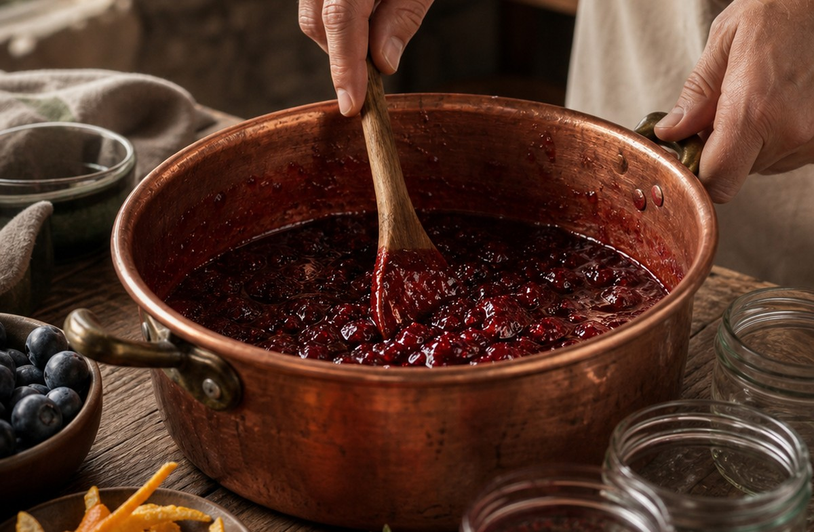
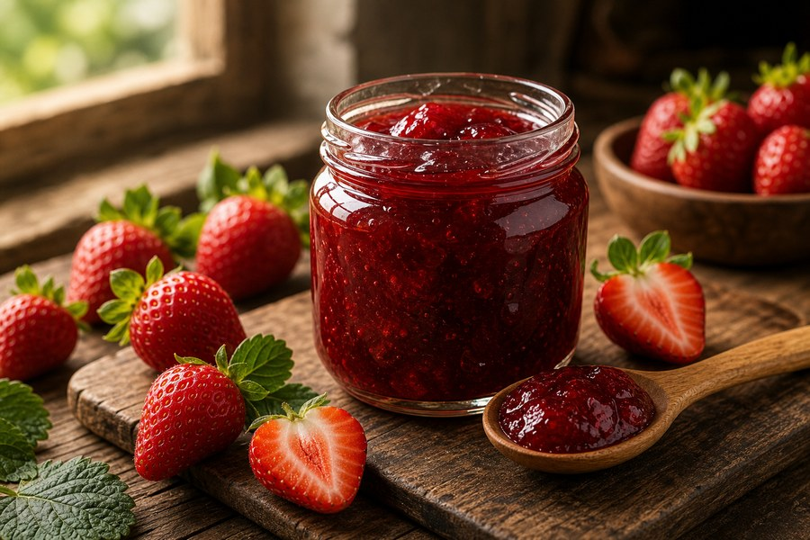
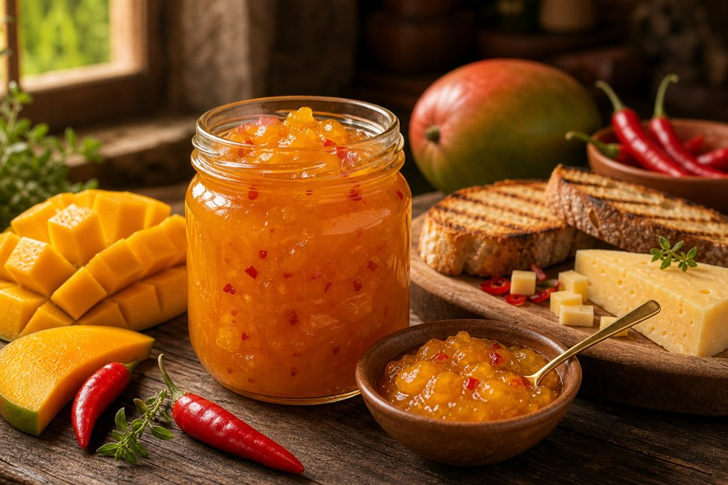
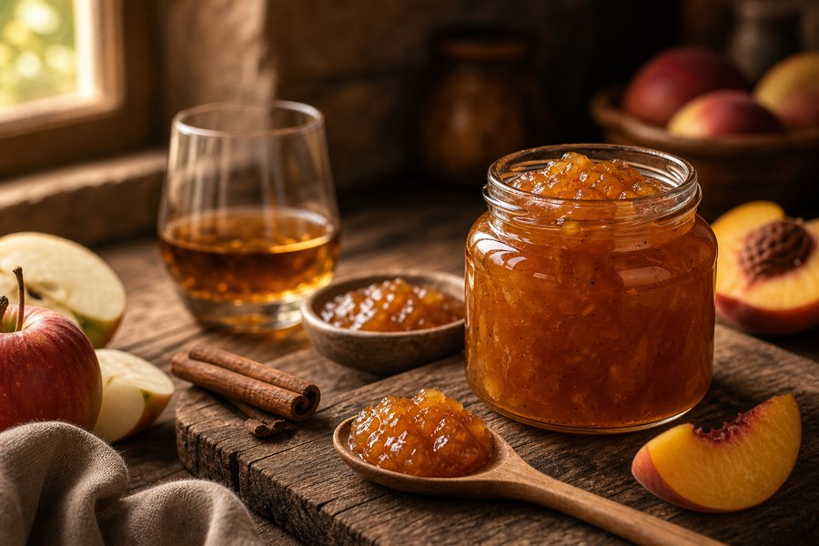
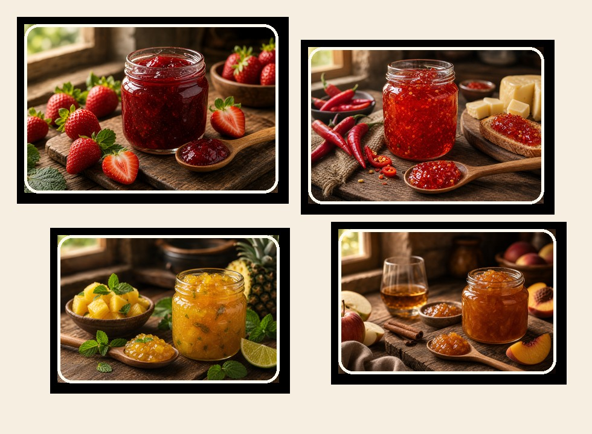

O problema não é a receita
O problema não é faltar vontade. É tentar vender geleia sem técnica, sem padrão e sem preço certo.
Muita gente começa animada, compra fruta, faz uma receita da internet e descobre tarde demais que não sabe controlar textura, validade, margem ou quais sabores realmente têm saída. O resultado é insegurança, desperdício e pote bonito vendido barato demais.
Você não precisa começar grande
Você não precisa começar grande. Precisa começar com processo.
Geleia artesanal é uma das formas mais acessíveis de transformar frutas simples em produto de alto valor percebido. Com a ordem certa, você aprende a produzir em pequenos lotes, testar sabores, calcular custos e vender com mais segurança antes de investir pesado.
Sem cozinha industrial
Sem maquinário caro
Sem experiência prévia
Com produção por etapas
Com planilha de preço
Com sabores de maior aceitação

Por que geleias artesanais vendem
Geleia artesanal vende porque cabe em muitos momentos de consumo.
Ela entra no café da manhã, cestas de presente, queijos, tábuas, lanches, hamburguerias, empórios, feiras, encomendas e lembranças personalizadas. Um produto pequeno, visual, fácil de demonstrar e com ótimo espaço para sabores autorais.
O que muda com o processo certo
Transforme frutas comuns em potes com aparência, sabor e margem de produto artesanal.
O método junta técnica culinária, organização de produção e visão comercial para você sair da tentativa e erro.

Comece com sabores que o público já conhece
Morango, frutas vermelhas, goiaba, uva, abacaxi, manga e outras bases de alta aceitação.

Crie combinações de maior valor percebido
Sabores autorais para queijos, tábuas, presentes, empórios e vendas gourmet.

Venda com mais clareza de custo e margem
Use a planilha para organizar ingredientes, produção, preço de venda e lucro estimado.

O que você vai aprender
Um mapa completo da fruta ao pote pronto para vender.
- Como escolher frutas, ajustar acidez e controlar o ponto da geleia.
- Como produzir em cozinha comum ou apartamento com organização e higiene.
- Como esterilizar, envasar, conservar e armazenar com mais segurança.
- Como criar sabores autorais sem perder textura, brilho e equilíbrio.
- Como precificar usando custo real, margem e estratégia de venda.
- Como começar pequeno, testar aceitação e crescer com menos risco.
As 30 receitas mais vendidas
Receitas clássicas, gourmet e autorais para diferentes tipos de cliente.
Você aprende sabores de entrada, sabores para presente, sabores para acompanhar queijos e opções com apelo comercial para feiras, encomendas e mercados locais.
Morango
Frutas vermelhas
Goiaba
Uva
Figo
Damasco
Manga com pimenta
Abacaxi com hortelã
Laranja com gengibre
Pimenta agridoce
Maçã com canela
Sabores gourmet
Planilha profissional inclusa
Produzir sem saber custo é vender no escuro.
A planilha de custos, produção e vendas ajuda você a calcular custo real de cada receita, definir preço com margem, acompanhar produção, organizar insumos e visualizar seus resultados.
Custo real por receita
Margem de lucro
Preço de venda
Controle de produção
Insumos e clientes
Relatórios simples


Quem criou o método
Bruno Cavalcanti ensina gastronomia com visão de produto, não apenas de receita.
Com mais de 15 anos na gastronomia, Bruno já esteve à frente de restaurantes, criou cardápios, desenvolveu receitas autorais e aprendeu na prática que sabor sozinho não sustenta um produto. É preciso padrão, apresentação, custo, margem e uma experiência que faça o cliente querer comprar de novo.
Segredos das Geleias Artesanais transforma essa vivência em um passo a passo simples para quem quer produzir em casa com mentalidade profissional.
Mesmo começando do zero
Feito para quem quer começar de casa, com baixo investimento e sem se sentir perdida.
Não tenho experiência
O conteúdo começa pela base: fruta, ponto, textura, higiene, envase e preço.
Moro em apartamento
A proposta é produzir em cozinha comum, respeitando organização, limpeza e pequenos lotes.
Não tenho equipamentos
Você começa com utensílios acessíveis antes de pensar em estrutura maior.
Tenho pouco dinheiro
Geleias permitem testar sabores em lotes pequenos e validar procura antes de escalar.
Não sei cozinhar bem
O ebook explica o processo para reduzir improviso e aumentar repetição.
Não tenho tempo
Você pode estudar e produzir por etapas, começando com uma receita por vez.
Não sei vender
O material mostra oportunidades de venda, posicionamento e começo pequeno.
Tenho medo de errar
O método organiza os pontos críticos: acidez, açúcar, textura, higiene e armazenamento.
Não sei quais sabores vender
As 30 receitas ajudam você a começar pelos sabores com maior aceitação.
Não sei calcular preço
A planilha profissional ajuda a enxergar custo, margem e preço final.
Não sei onde comprar ingredientes
Você aprende a olhar para frutas, insumos e custos com lógica de produção.
Não tenho cozinha profissional
Esse é justamente o ponto: começar com o que você tem e melhorar com processo.
Garantia
Garantia Pote Seguro
Você compra com tranquilidade pela Hotmart.
Se o material não fizer sentido para você, use a garantia disponível na plataforma dentro do prazo informado no checkout. A decisão fica mais leve porque você pode conhecer o conteúdo com segurança.
Quero acessar sem complicaçãoPagamento simples
Escolha a forma de pagamento e receba o acesso digital.
Cartão
Pague com cartão de crédito diretamente no checkout seguro da Hotmart.
Pix
Quando disponível no checkout, use Pix para uma confirmação prática e rápida.
Parcelamento
Veja as opções de parcelamento exibidas pela Hotmart no momento da compra.
Acesso imediato
Após a confirmação, você recebe as instruções de acesso pelo e-mail cadastrado.
Oferta de acesso imediato
Comece hoje a produzir geleias artesanais com técnica, receitas e controle de custos.
30 Receitas Premium de GeleiasR$197
Método de Produção ArtesanalR$97
Guia de Conservação, Envase e HigieneR$67
Guia de Precificação e Primeiras VendasR$67
Planilha Profissional de Custos e VendasR$94
Valor percebido totalR$522
De R$97
R$67
Pagamento único. Opções de parcelamento no checkout.
Sim, quero minhas 30 receitasVocê será direcionado para a oferta especial do combo antes do checkout. Compra segura pela Hotmart.
Perguntas frequentes
40 respostas para comprar com clareza.
Funciona para iniciantes?
Sim. O conteúdo começa pela base e foi pensado para quem quer produzir com orientação.
Preciso de cozinha industrial?
Não. A proposta é começar em cozinha comum ou apartamento.
Preciso de equipamentos caros?
Não para começar. O método prioriza utensílios acessíveis e organização.
O ebook ensina 30 receitas?
Sim. O material traz 30 receitas de geleias artesanais com apelo comercial.
Quais sabores aparecem?
Há clássicos, frutas populares e combinações gourmet para diferentes ocasiões.
Consigo criar sabores autorais?
Sim. Você aprende a lógica para adaptar fruta, acidez, textura e proposta.
O conteúdo fala de ponto da geleia?
Sim. Controle de ponto e textura é um dos pontos centrais.
Fala de higienização?
Sim. Boas práticas, esterilização, envase e conservação fazem parte do conteúdo.
Fala de validade?
Sim. O ebook aborda conservação e armazenamento para maior segurança.
Posso vender as geleias?
Sim. O material foi pensado para consumo próprio e também venda artesanal.
Preciso ter CNPJ?
Você pode começar estudando e testando pequeno; para venda formal, siga regras locais.
Serve para vender em feira?
Sim. Feiras, mercados locais, empórios e encomendas são contextos possíveis.
Serve para vender online?
Sim, desde que você organize embalagem, entrega, conservação e regras aplicáveis.
O ebook ensina precificação?
Sim. Você recebe orientação e planilha para calcular custo e preço.
A planilha vem junto?
Sim. A planilha profissional é bônus incluso na oferta.
Preciso saber Excel?
Não precisa ser especialista. A ideia é facilitar cálculos de custo e margem.
Tenho pouco dinheiro para investir. Serve para mim?
Sim. A proposta é começar pequeno, testar e crescer com menos risco.
Quanto tempo preciso por semana?
Depende do seu ritmo, mas você pode estudar e produzir em pequenas etapas.
Posso produzir em apartamento?
Sim. O método considera cozinha comum e pequenos lotes.
Como escolho frutas?
O conteúdo orienta escolha correta das frutas e impacto no resultado final.
Tenho medo de errar a textura.
O ebook explica ponto, textura, acidez e controle do processo.
Tenho medo de não vender.
Você aprende a começar com sabores de maior aceitação e validar aos poucos.
Tem estratégia para primeiras vendas?
Sim. O material aborda oportunidades para começar pequeno e crescer.
Serve para presentes e cestas?
Sim. Geleias são ótimas para presentes, kits, cestas e datas especiais.
Serve para restaurantes, cafés ou empórios?
Sim. O conteúdo ajuda quem quer produto artesanal com apresentação profissional.
Vou receber material físico?
Não. A entrega é digital.
Como recebo acesso?
Após a confirmação da compra, a Hotmart envia as instruções para o e-mail cadastrado.
O acesso é imediato?
Após confirmação do pagamento, o acesso digital é liberado conforme a Hotmart.
Posso pagar no Pix?
Use as opções disponíveis no checkout da Hotmart.
Posso parcelar?
As opções de parcelamento aparecem no checkout da Hotmart.
A compra é segura?
Sim. O pagamento é processado pela Hotmart.
Tem garantia?
Sim. A garantia segue o prazo e condições informados no checkout.
Tem atualizações?
Consulte a área do produto e comunicações oficiais para atualizações disponíveis.
Posso imprimir?
Você pode usar o arquivo digital como referência e imprimir para uso pessoal se o formato permitir.
Preciso comprar ingredientes difíceis?
Não. A proposta começa com frutas e insumos acessíveis, evoluindo para combinações gourmet.
O ebook fala de embalagem?
Sim, dentro da lógica de apresentação, envase e produto artesanal.
Fala de controle financeiro?
Sim. A planilha ajuda a organizar custos, produção e vendas.
Serve para quem só quer fazer para casa?
Sim. Você pode usar para consumo próprio e deixar a venda como etapa futura.
O botão vai direto para o checkout?
Ele leva para uma página de oferta do combo antes do checkout, onde você escolhe seguir com o ebook ou aproveitar a coleção.
Por que comprar agora?
Porque por R$67 você evita começar no improviso e já recebe receitas, método e planilha para organizar sua produção.
Comece com uma receita, um lote pequeno e um processo mais seguro para transformar geleias em renda extra.
Garanta o ebook completo por R$67 e veja a oferta especial do combo antes do checkout.
Quero acessar o Segredos das Geleias